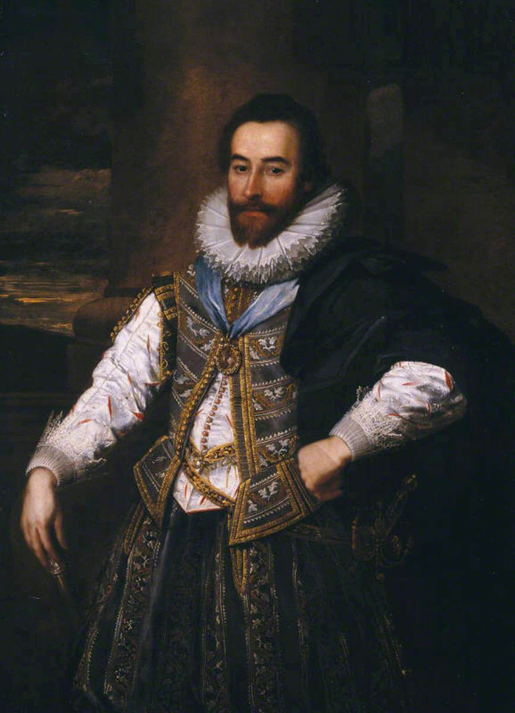

UN SECOND SOI-MEME

In the eyes of Archbishop William Laud, the Swiss theology graduate Jacob Battier was "most unfit every way to be a prime Dean" in the Church of England, but he did have a considerable British career. Born in 1604 in Basel, he graduated at age 20 in Geneva under Jean Diodati, and four months later registered as a user of the Bodleian library on 20 July 1624, and by 1628 was in a position to recommend his "kinsman" Johann Jacob Frey to the Great Earl of Cork. Frey and Battier, distantly related by marriage, became very good friends at some point; in 1633 or 1634 they were naturalized as British citizens in the same document. Like Frey, Battier tutored aristocratic teenagers, including the sons of the Earl of Warwick, who he took to Basel for at least 5 months, and did research for the learned Archbishop James Ussher, often working together with Frey to find rare books and manuscripts.
Battier's most significant activity, however, was in a field which Frey stayed clear of: diplomacy. Battier reported to the Secretary of State, John Coke, from Geneva at one point, and became secretary to the powerful Earl of Leicester. This could be very hard work; in 1641, Battier apologized for not replying to a private letter by explaining that he had been extremely busy as the only "agent" of King Charles I in Paris for four whole months. In fact, most of his extant letters are dated from Paris, but are full of remarks on business trips to England and Ireland. He died in London in 1643, a childless widower of 39, who could afford to look after the money which English debtors owed to the family of Johann Jacob Frey since he was well off enough not to need it: "Gott hatt mir so viel vergönnet, das ich wol ohne dises läben kan".
Apart from leading a busy life of constant to and fro between Switzerland, Paris and England, Battier is remarkable for a certain restless flamboyance which can be glimpsed from Laud's complaint about his styling and from the phase which concludes his letter of apology to a noble employer: "your honour's either made or undone servant". His rhetoric became most poignant when death of his friend Johann Jacob Frey deprived him of, in the words of his sister, "what he most cherishes in the world as being his other self ("un second soy mesme"). In fact, Battier took four months to write a letter of condolence to Frey's mother because he could not "indicate my sorrow better than by silence" since the loss was "so unspeakable". More than two years later, when the father of Frey's widow died, he expressed his regret with the qualification that he had little faith in human life ("wenig mehr auff menschlich leben setze") after Frey's death. Battier's will includes numerous money bequests including a grant foundation to the University of Basel for indigent students. The most intimate endowment is that he left "my late wife's pearls" to his sister Anna Maria, who had written so feelingly of Battiers' bond with Johann Jacob Frey.
Regula Hohl Trillini